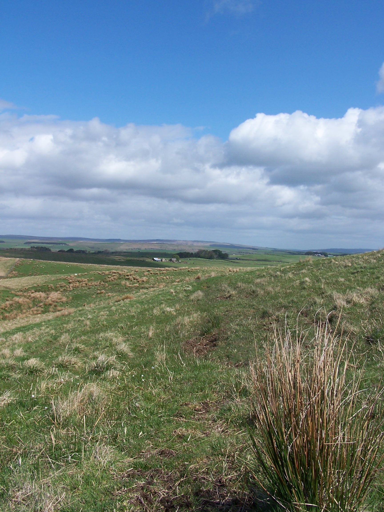

Pennine Way through Northern England
Friday 1st May Burness to Bellingham
Pennine Way on forest tracks and hill paths
14 miles approx
I
had already covered a few miles of Pennine Way yesterday and in foul
weather. I woke early at 6:30am and nipped to the loo. Given that today
was a relatively short one I got  back
in the bag and it wasn't until after nine when I resurfaced. I had used
the cape as a ground sheet to protect the tent from the swampy grass of
the
campsite. It was now so muddy enough that it needed a wash under a tap. I
didn't get started walking until 10:40. It was already cloudy with just a
sneek of sun. I was now on familiar turf. I remember that when I walked
this part of the way a few years ago, I was
walking with a bloke that I had met on the Cheviot. Tony was from
a town just up the road from my home and so we walked together for a
few days. It was very sunny back
then but not today, so the walk along the track through Redesdale
Forest was long and
bleak. Looking back I could see the Cheviot looking like a huge slug in the
far
distance. I eventually reached the gate and, remembering how muddy the
pennine way path was as it followed the fence from here towards Padon
Hill, I decided to continue along the forest
track for a few miles more. The track became a small single track
road which later rejoined the PW at Gunstone.
back
in the bag and it wasn't until after nine when I resurfaced. I had used
the cape as a ground sheet to protect the tent from the swampy grass of
the
campsite. It was now so muddy enough that it needed a wash under a tap. I
didn't get started walking until 10:40. It was already cloudy with just a
sneek of sun. I was now on familiar turf. I remember that when I walked
this part of the way a few years ago, I was
walking with a bloke that I had met on the Cheviot. Tony was from
a town just up the road from my home and so we walked together for a
few days. It was very sunny back
then but not today, so the walk along the track through Redesdale
Forest was long and
bleak. Looking back I could see the Cheviot looking like a huge slug in the
far
distance. I eventually reached the gate and, remembering how muddy the
pennine way path was as it followed the fence from here towards Padon
Hill, I decided to continue along the forest
track for a few miles more. The track became a small single track
road which later rejoined the PW at Gunstone.
At
this junction it started
raining hard, I knew it was coming, as from here, you can see for
miles ahead and I could see a band of rain sweeping in across from the
west. So it was on with the waterproofs and cape again. The ground was
already
very boggy and this made for difficult walking with the driving heavy
rain. The sky was full of rain, great curtains continued to push in
one after the next. I pushed out as hard and fast as I could, and was
just glad
that I had walked and seen this area already as I wasn't about to see
much
of it now. I followed the PW all the way to Bellingham and just as I arrived
it
stopped raining. How strange and how typical. I was glad though, as it
meant that I could get
rid of the waterproofs before I arrived at the guest house. I'd stayed
at
the Lyn Dale guest house before. It is run by Ken and his wife. They
really make
you feel welcome. I even got the same little room that I'd stayed in
the last time. Its at the top of a spiral staircase with a good
view of the
start of tomorrows walk. Ken suggested that I head to the cafe on the
edge of town for something to eat. It wasn't well signed, and was in fact part
of the village hall so I
nearly missed it. It was worth finding however as the food was really nice and
home cooked. I had
burger and real chips followed by a piece of carrot cake. Yum. I
bought a few supplies for tomorrow from the COOP and headed back to my
room.
Saturday 2nd May Bellingham to Once Brewed
Pennine Way on forest tracks and hill paths
15 miles approx (+ 3 miles to Hareshaw Linn)
I woke
early and headed down for breakfast at 8am. I was joined at the table by six cyclists who
were enjoying a three day ride to Lindesfarn on this bank holiday
weekend. We talked about cycling adventures and it turned out that four of them were from Tideswell and often cycled in the peak district around Monsall. They
were interested in my walk and we talked so much to cause Ken a few
problems with timing the delivery of their breakfasts. I only had scrambled egg
on toast as I wanted to get away fairly early and I had decided to walk up to Hareshaw Linn (waterfall) before setting off.
Ken and Joy suggested that I leave my pack with them and pick it up on
the way back. They are really nice people. I took a brisk walk to the
river and saw the fingerpost to the Linn, 1.5 miles, what!!! Well I'd
decided to do it so at nearly a running pace I stomped it out. The path
was cool and shaded from the early morning sun. It was also nice and empty at
this time of the morning. I crossed a few bridges as I climbed up the
gully and soon found myself at the Linn. Its a nice waterfall, and worth the walk, especially as I had it all to
myself. I didn't hang about though having to cover the same distance back to town before a full
days walk. Before collecting my pack I called in to the butchers in the market square to buy some
freshly made ham butties. I could still taste the ones I had when walking the pennine way.
Ken recommended them to me then and they are really nice. Real ham, cut in
front of you, real butter, and nice soft buns. I returned to the guest
house. Ken and Joy were surprised that I'd done it so fast. They
offered me a cup of tea but I declined having to make some miles being
nearly 10am. On in the sun, down to the river North Tyne, then accross
and up towards the nicely named Shitlington Crags. All familiar stuff
to me. One thing I noticed
is that all the PW finger posts had been replaced with nice new ones in the last year.
These also now show you the distance to the next point. I remember that there
were some really nice old ones, covered in lichen and moss. These
had now gone too. There were quite a few people out today, one guy was
walking the PW north with his bike. He's doing it in stages and using
the bike to ride back to the start point. I bet he struggles in some
areas with a bike. Still he was happy. I stopped in the nice sunshine
just before entering the forest at Ground Rigg. There were a few groups
of people walking in both directions. I caught up with one at Haughton
Common, they were doing a circular days walk. I soon arrived at Ridley
Common  where I called my mum. Her family name being Ridley Pearson, I thought I should let her know.
Then after a steep climb up to Hadrians Wall I walked along it for a few miles. It was very
busy. Then at Milecastle 39 I left the
wall and headed down to Once
Brewed YHA. I'd stayed there before whilst walking with people from
work. I found it closed today, but luckily the Tourist Information next
door was open
and I bought some cans of pop and an ice lolly. It was steaming hot in
the afternoon
sun. A mile further on along the road brought me to Winshields farm
campsite. It was heaving with bank holiday families and groups. This was the first time I'd camped on a busy
site. Kids everywhere. Argggh. Still I was lucky as the one shower they had on site was
empty.
I washed my clothes in the sinks and hung them in the evening sun
on a makeshift washing line off my tent. I didn't get much sleep with the noisy
campers. Still a I was planning a relatively short day tomorrow.
where I called my mum. Her family name being Ridley Pearson, I thought I should let her know.
Then after a steep climb up to Hadrians Wall I walked along it for a few miles. It was very
busy. Then at Milecastle 39 I left the
wall and headed down to Once
Brewed YHA. I'd stayed there before whilst walking with people from
work. I found it closed today, but luckily the Tourist Information next
door was open
and I bought some cans of pop and an ice lolly. It was steaming hot in
the afternoon
sun. A mile further on along the road brought me to Winshields farm
campsite. It was heaving with bank holiday families and groups. This was the first time I'd camped on a busy
site. Kids everywhere. Argggh. Still I was lucky as the one shower they had on site was
empty.
I washed my clothes in the sinks and hung them in the evening sun
on a makeshift washing line off my tent. I didn't get much sleep with the noisy
campers. Still a I was planning a relatively short day tomorrow.
Sunday 3rd May Once Brewed to Alston
Mainly old railway track of the South Tyne Trail
17 miles approx
It
rained in the night, and
quite heavy too. I was up at 7:45am, and got in the
shower before anyone else. It was sort of sunny and windy so the tent
dried out before I set off. I took the path beside the farm and
climbed back up to Hardians Wall. I walked along the wall up to the
quarry car park at milecastle 42.
Here I left the Pennine Way and Hadrians Wall and took a little back road towards
Haltwistle. In the centre of town I found a sign that claimed
Haltwhistle is the centre of Great Britain. I guess that means I'm half
way.
I bought a few supplies from the local COOP and
headed for the Tyne Trail. I looked for and followed signs for cycle
route 68 (the pennine cycle way) as this joins the old railway track
for a few miles at the start. It wasn't too easy to find but I eventually joined the way at
Broomhouse. Walking along this old railway bed you can imagine the steam trains chugging along
belowing smoke out. The little bridges are darkened by the years of
sooty smoke. I had plenty of time to imagine these things as I was now with
the Tyne Trail for the rest of the day. In parts the track was busy with walkers
and cyclists. I passed old railway stations at Park Village and
Featherstone then came the great Lambley Viaduct. This is an imense structure that
once carried the trains over the deep South Tyne gorge. The old Lambley station
house is a private home and as a result the path drops down between the
giant arches of the viaduct and then back up to rejoin the track again further on. Later,
down the track I could see the Pennine Way weaving up above then below
the railway. I remembered
when walking the way that some people shouted down to me from the
track, as I was clambering up and down, what are you doing down there
man? I was walking the Pennine Way and wanted to follow it the whole
route. With this walk I was more flexible and could pick and choose my
path.
This
railway path makes for good and level walking. From Slaggyford the
gravel
path turned to grass and then mud, but in the scorching sun I didn't
mind
too much. From Kirkhaugh Station runs a narrow guage railway line to
Alston. As I approached the little steam train was arriving. As I
continued, I planned to
video the train as it passed me on its way back. I walked, walked and
walked, but in the end I had to stop on a bridge just outside Alston to
wait for
it! Alston was busy on this sunny Sunday. I made my way up to the
Victoria Inn, where I had stayed several times before. I got the same
room again. The landlady used to prepare her own chinese food, but this
time she had a curry restaurant set up in the back of the pub (the
victoria spice!). I had dinner there, It was really nice food. I sat in
my
room watching the weather forecast. Serious rain and wild wind for the
next three
days. Hard to believe this would be the case after today. I bought
supplies from COOP. Fingers crossed about the weather.
Monday 4th May Alston to Dufton
Tracks and paths of the Pennine Way
20 miles approx
I woke
at 6:30 with rain lashing at the windows. The forecast was right. I had a
nice breakfast at 8am and had a chat with a couple of cyclists who were
planning their days ride with maps out on the table. These guys are the
types who have always done what you have done but only faster, further
or otherwise better so I didn't talk long. As I left the hotel the rain
had stopped.
I rejoined and followed the PW along the river through fields towards
Garrigill.
There was a mean looking bull in one of the fields but it payed me no
attention. As I approached Garigill it started raining hard and the
wind picked up too. The village was dead. I guess the rain is keeping
people
inside or away altogether. Just beyond rthe village squar, the old
miners track begins and took me up towards a grey cloud
covered Cross Fell. This is the highest point of the PW and it was
typical that I
was heading up in the worst weather this year. I walked and walked with
the
rain getting heavier and the wind building even stronger, driving the
rain straight in my face.
It was grim. My hands were freezing as I gripped the cape tightly to
try to
keep it from blowing away. I eventually made it to Gregs Hut (an old miners hut, now a bothy) just a few hundred feet below the summit.
I went in to sign the book but my hands were so cold that I couldn't hold the
pen. I had to stay there for 20mins to see if I could warm up a bit. I was wet and
cold and hadn't even got to the top yet. As I left I met a guy coming
down. He warned me that the wind on top was so strong that he could
hardly stand up. I had little choice really so I pressed on through the squelch, now following an indistinct
path towards a cairn that marked the edge of the plateau. The wind was
crazy, I too found that I could hardly stand. I had to take the cape off as it was
either going to fly off or worse take
me with it. I took shelter at the stone shelter erected near the trig point and
made a call home. When I had walked the PW I had great views from here, today
all I  could
see was horizontal rain driving hard in towards me. It was
so misty that I couldn't see the cairns that mark the route across. I
headed off and soon realised that I was lost and didn't recognise
anything. One minute I was walking on wet bolders, the next I was in
very boggy wet
ground. I pulled out the GPS. I had already Dufton and the Dun
Fells marked and
I could see that I was heading the wrong way. I followed the GPS
through the driving rain and eventually found the slabbed path that ran
over to
Little Dun Fell. As I crossed the ridge the wind was insane. I was
struggling to walk and was almost horizontal having to use my
hands to steady myself. The wind was so
bad that my waterproof pants tore apart and blew off. I had to get them
back and the wind nearly put me in a large boggy pond. This was
nightmare walking. The slabs were greasy and the wind sent me skidding
about so many times. I was shouting at the wind, it wouldn't beat me. I
was going to finish this walk. I wasn't going to be defeated now. I
needed the GPS again to get me across to
Great Dun Fell where I had a brief break from the wind as I rounded the back
of the
hill. Now it was over towards and over Green Fell. This was horrible again as I
was
soaking wet and freezing cold. Yet again I needed the GPS to find
the
cairn that marked the down path to Dufton. I stomped down the path and
as I decended the wind dropped away. The rain stopped too. I must have
looked weird to people that I passed low down as it was nice and sunny
and there was no wind as I arrived in Dufton. It didn't last though, as
while I
was pitching the tent it started raining again. I got showered and
headed to the Stag Inn for fish and chips and a couple of pints of
Boddingtons. I was stuffed. Back to the tent, the
weather was again, cold, wet and miserable. I listened
to the radio, tomorrows weather was forecast to be worse. Brill.
could
see was horizontal rain driving hard in towards me. It was
so misty that I couldn't see the cairns that mark the route across. I
headed off and soon realised that I was lost and didn't recognise
anything. One minute I was walking on wet bolders, the next I was in
very boggy wet
ground. I pulled out the GPS. I had already Dufton and the Dun
Fells marked and
I could see that I was heading the wrong way. I followed the GPS
through the driving rain and eventually found the slabbed path that ran
over to
Little Dun Fell. As I crossed the ridge the wind was insane. I was
struggling to walk and was almost horizontal having to use my
hands to steady myself. The wind was so
bad that my waterproof pants tore apart and blew off. I had to get them
back and the wind nearly put me in a large boggy pond. This was
nightmare walking. The slabs were greasy and the wind sent me skidding
about so many times. I was shouting at the wind, it wouldn't beat me. I
was going to finish this walk. I wasn't going to be defeated now. I
needed the GPS again to get me across to
Great Dun Fell where I had a brief break from the wind as I rounded the back
of the
hill. Now it was over towards and over Green Fell. This was horrible again as I
was
soaking wet and freezing cold. Yet again I needed the GPS to find
the
cairn that marked the down path to Dufton. I stomped down the path and
as I decended the wind dropped away. The rain stopped too. I must have
looked weird to people that I passed low down as it was nice and sunny
and there was no wind as I arrived in Dufton. It didn't last though, as
while I
was pitching the tent it started raining again. I got showered and
headed to the Stag Inn for fish and chips and a couple of pints of
Boddingtons. I was stuffed. Back to the tent, the
weather was again, cold, wet and miserable. I listened
to the radio, tomorrows weather was forecast to be worse. Brill.
Tuesday 5th May Dufton to Sedburgh
Tracks, paths and a bit of road to and through the Howgills
28 miles approx
Its
been just four
weeks of walking to get me to here from the top of Britain. What a
walk, what an experience and I'm now only days away from home, its hard
to believe. The
wind was very strong and gusty in the
night, but the little tent held out ok. I was showered and packed up by
7am.
It wasn't raining. I had a long day ahead that would take me through unfamiliar
territory. To begin with I used a local path to keep me off the road as I headed out
towards Appleby-In-Westmoreland,
but there was no choice but to walk the
road for a couple of miles when the path ran out. This wasn't a problem
as even though it was rush hour, the traffic was light. Looking back,
the cloud was sitting dark and heavy
over the hills. I wondered if Cross Fell was as bad today as it
was
for me yesterday. Appleby was busy with people heading to work and
school. I
found a little COOP for supplies. I was hoping to find an outdoor shop
in town
but there was none. If it wasn't for the busy traffic and parked
cars, the place
would have been really nice. I decided to do some road walking out of
town given that there wasn't much of an alternative. I headed out
to Hoff where a
path promised to take me along the Hoff Beck. I eventually got off the
road and managed to find the path by
chance as there are no signs. The path follows the little river
through
fields of cows and sheep up to the Rutter Force waterfall. I couldn't
find
the waterfall and at one point I found myself in someones garden. The
path had been made unclear and there are no signs to follow. After this
as I progressed through more
fields with yet more cows and I couldn't be sure where to go at all. I
was looking for a gate or a bridge to cross the beck as I waded through
long wet grass. I eventually found a bridge and then followed a
farm track which brought me to the road near Great Asby. That was a
relief. After a bit more road
taking me through this nice village and a rather grotty farm yard I was
at last in open fields with obvious wall stiles. I made my way up to Asby
Winderwath Common. It started to drizzle as I reached the wilder moors
and I could see lots of rain clouds coming in from the west. This is a wild and remote place. On a sunny day it would be great walking country. I crested the hill and could see the
Howgills in the dreary distance. As I headed down about fifty sheep
decided to follow me noisely. Baaing mad for something, I think that they thought that I was a farmer with dinner. I managed to
get through a gate and close it behind me, leaving them complaining. It started to
really rain now, heavy rain too. It was on with the full waterproofs and cape. This place, and the views
would be really nice in better weather, open limestone moors around
Sunbiggin Tarn. I couldn't see a track on the ground where it shows on
the map so I followed a wall up hill and steep down hill and climbed a gate to a little
road that headed towards Newbiggin. After half a mile I joined a
little road through an underpass towards Bowderdale. Here the rain
really came down hard and a really cold wind picked up and again blasted the rain in my face. It was yesterday
all over again. I was really looking forward to the Howgills section of this walk too. The path that climbed up
Bowderdale
was like a river, everything was wet through including me. With the bad weather and especially the strong wind I
made the decision not to go to the the highest peak, The Calf. On the map I could
see a little path that made its way down from the top of the pass and
was on the look out for it.
The climb up Bowderdale was long and in this wind and rain, it was very
tough
going. I noticed what could be a little used path up near Rams Gill and
had to jump over a river to get to it. Squelch, squelch, squelch
through a boggy mire before the path become a little more clearly a
path. From
here I could see a great waterfall (I wasn't too surprised with
all this rain).
It was Cautly Spout which looked to fall a hundred feet or more.
My path dropped off steeply here too.
It was steep steep and skiddy gravel too. I took it easy even though
the wind and rain wanted to send me to the bottom much quicker. I was off my map
now an had to guess which way to go. At the bottom, I found what looked
like an old
path or bridalway that headed in the rightish direction. It cut up above
the
valley. I walked and walked and eventually came to a small road which
climbed steeply up and down. The rain was tipping down on me so heavy
that I looked about to see
who was holding the jet washer but it was just rain. I eventually
came out at the A road into Sedburgh and found the Dalesman Inn.
As I entered everyone at the bar turned to look at me. I felt it
necessary to remark that it is raining out there you know. I
was shown to my room, squelching with every step. Everything was wet
but I was drained. I
had a nice dinner of stake and chips and got an early night with
another long day, with forecast bad weather tomorrow.
Wednesday 6th May Sedburgh to Horton-in-Ribblesdale
Hill paths through the Yorkshire Dales to rejoin the Pennine Way
22 miles approx
Most
of my things had dried out by the time I woke at 6:30am. I headed for
breakfast at 8:30. It was a really full, full-English breakfast. I chatted with an
elderly couple who had travelled from New Zealand and had driven up the M6 in that horrible rain yesterday. When I mentioned what I was doing they told me of
an end to end walk through the two Islands of New Zealand. Perhaps this could be a future
idea. I set out shortly after. It wasn't raining. I called in to a
walking shop and bought some cheap waterproof trousers then headed out
of town looking for the Dales Way. I found and joined it at Millthrop. Only a mile
into the day and it started to rain. Drizzle at first then heavy rain,
then really heavy rain. I was following a field path through loads of styles
with gates along the river Dee. There were a few people out and about.
I thought to myself that they must be mad, but I was mad too. I arrived at Dent,
cold and wet through already. I decided to try to follow the little Ingleton
road out of town rather than the original plan of Green Lane as the
wind was howling at this low level and I didn't want to gain height too
soon in the day. The road was off my map but I believed that it would
bring me out alongside of Whernside, which was the first peak for today. It was a very
steep road with a couple of closed gates too, but I did eventually
arrive at its crest in a gale force wind and horizontal rain at White Shaw Moss. Where the
map shows that a path strikes off the road towards the summit I
couldn't find any sign of it on the ground. As it stands I could hardly stand
and the rain was now power washing into my face. I took a
chance and went through an old green metal gate and crossed a
small river before aiming up what could only be described as a rough
sheep track. It looked
like the only possible option in this terrible weather and thick cloud.
At the end of a wall, as the path climbed
steeply to a level shoulder, the wind really hit and took my
cape right off over my head. I had no choice but to remove it
completely and push on into the driving rain. Luckily there
were a couple of cairns to guide me as the place was just a river and swamp. I
could hardly believe it when out of the cloud appeared a familiar sight
of the shelter and trig point of Whernside. I dived into the shelter,
and ducked down out of the wind. Just as I did a bloke turned the
corner and joined me in the shelter. Chris was doing a
recky walk preparing for guiding a group of people round the three peak
challenge route the following week. I left him eating a butty and pressed on
into the wind. The rain was now stinging my face, I needed to get down. The
path down was much clearer being part of the main route over to Ingleborough, but it
was very steep steps. Very steep and wet steps, so I took my time. Chris
caught up to me near the bottom and passed me in a hurry to get back to his
car in Horton. As I got lower the rain stopped and cleared enough for
me to see the Ribblehead Viaduct in the distance. Now began the climb up to
Ingleborough. I'd done this as part of the Yorkshire three peak
challenge a couple of years ago with people from work. It was sunny
then. Not today. It rained on and off on the climb up to the ridge. At
the top of the very steep bit, I caught up to two guys. They were going
to the top of Ingleborough as a training walk for doing the coast to
coast walk. They were impressed with what I'd already done and was doing as a whole.
Now I was heading down the wide track towards Horton. Chris came
walking up behind me and we walked the last few miles together. He just
stomped through all the mud and slop whilst I skirted round it. He was heading home, I was heading to a pub. We
talked about a few things including his interest in archery. It was nice to walk with someone for a spell. I left him
at the car park. I cleaned up my boots in the wet grass on the roadside and took off the gaiters outside
the closed Pen Y Gent Cafe, then headed over to the Golden Lion pub.
The room was
ok, with working very hot radiators. I had burger and chips in the bar and headed
up to bed, I was very tired today. In fact I was wasted. The weather was really taking its
toll.
Thursday 7th May Horton-in-Ribblesdale to Gargrave
Hill paths along the Pennine Way
20 miles approx
I woke
early as usual. It rained really hard in the night and was very windy
too. Lucky then that I was indoors. The sun was shining through the window as I headed down for breakfast.
Everything had dried out on the  radiators.
This was becoming a routine since starting on the pennines. There was a
couple of lads downstairs, they were walking the Pennine
Way northward and told me that they were suffering with this weather
and sore feet. They had arranged to have their packs picked up at Hawes
and had booked YHAs and B&Bs for the remainder of the walk. As we
were talking it started raining again outside. Nice touch. I wished
them well and headed out. The rain died off as I made my way up towards
Pen-y-Ghent. As I climbed the wind grew stonger and stronger. The
weather has been terrible since I crossed into England. Is it that I
was being tested at the half way point. This happened on the
Pennine Way too. When I reached
the ridge I cut off along the PW towards Fountains
Fell. There was a glimpse or two of sun between lots of heavy dark and
menacing cloud. It was
very hard walking in the strong headwind. My left shin was begining to
hurt
with each step. Fountains fell is a short steep up followed by a long
meandering
down. The down path towards Malham tarn had some strange looking
cows crowded together across the path. They had very long horns but
were forward pointing rather than the upward pointing highland type. I
bet that they were sick of the
weather too. I met a few people near the bottom. A couple of blokes
were walking the PW. The
wind made Malham tarn very choppy. It was almost like being at the
seaside. Again cows
covered the path around the tarn. These were regular cows without huge
horns. One dropped a pat right in front of me. It splattered
all over but luckily missed me, or it would have been burgers by now.
The next
stage to Malham Cove was quite busy. The sun was nice now, but the wind
ripped through the Ing Scar. From the limestone
pavement on top of the cove the views were now great. With a clear sky I
could see Pendle Hill and beyond. I was now really starting to feel close to
home. I pressed on through Malham and followed the PW along the river
Aire towards Gargrave. The walking was easy going. The wind had dropped
and the sun was out, at last a nice end to the day. I found the
campsite at the back of town and was on my own in a little field. All very
nice for just £5 too. As I pitched another guy turned up. Richard is
walking the PW north and he looked in pain as he hobbled in. He told me that he was
about to quit having had a horrible last few days with weather and
things going wrong. He was pushing too hard at the start and had set
himself a very tight schedule. I told him to sort out his blisters and start to think
one day at a time. He should have a short day to Malham tomorrow and take
it from there. He agreed. We went into town and found a curry house and
had a nice curry before heading to the Sun Inn for a couple of
pints.
radiators.
This was becoming a routine since starting on the pennines. There was a
couple of lads downstairs, they were walking the Pennine
Way northward and told me that they were suffering with this weather
and sore feet. They had arranged to have their packs picked up at Hawes
and had booked YHAs and B&Bs for the remainder of the walk. As we
were talking it started raining again outside. Nice touch. I wished
them well and headed out. The rain died off as I made my way up towards
Pen-y-Ghent. As I climbed the wind grew stonger and stronger. The
weather has been terrible since I crossed into England. Is it that I
was being tested at the half way point. This happened on the
Pennine Way too. When I reached
the ridge I cut off along the PW towards Fountains
Fell. There was a glimpse or two of sun between lots of heavy dark and
menacing cloud. It was
very hard walking in the strong headwind. My left shin was begining to
hurt
with each step. Fountains fell is a short steep up followed by a long
meandering
down. The down path towards Malham tarn had some strange looking
cows crowded together across the path. They had very long horns but
were forward pointing rather than the upward pointing highland type. I
bet that they were sick of the
weather too. I met a few people near the bottom. A couple of blokes
were walking the PW. The
wind made Malham tarn very choppy. It was almost like being at the
seaside. Again cows
covered the path around the tarn. These were regular cows without huge
horns. One dropped a pat right in front of me. It splattered
all over but luckily missed me, or it would have been burgers by now.
The next
stage to Malham Cove was quite busy. The sun was nice now, but the wind
ripped through the Ing Scar. From the limestone
pavement on top of the cove the views were now great. With a clear sky I
could see Pendle Hill and beyond. I was now really starting to feel close to
home. I pressed on through Malham and followed the PW along the river
Aire towards Gargrave. The walking was easy going. The wind had dropped
and the sun was out, at last a nice end to the day. I found the
campsite at the back of town and was on my own in a little field. All very
nice for just £5 too. As I pitched another guy turned up. Richard is
walking the PW north and he looked in pain as he hobbled in. He told me that he was
about to quit having had a horrible last few days with weather and
things going wrong. He was pushing too hard at the start and had set
himself a very tight schedule. I told him to sort out his blisters and start to think
one day at a time. He should have a short day to Malham tomorrow and take
it from there. He agreed. We went into town and found a curry house and
had a nice curry before heading to the Sun Inn for a couple of
pints.
Back at the tent I got my head down at about 10pm after calling home. It rained hard in the night. I woke with a start as lorries were starting up at 4:30am in the yard right next to the field. Nice one.
Friday 8th May Gargrave to Pondon
Hill paths along the Pennine Way
18 miles approx
I woke
early and after saying good luck to Richard I was on my way. The
weather was cool and windy with a cloudy sky. Richard had lost his
gaters yesterday in the bad weather and
I said I'd look out for them. I found them not far out of town next to
a difficult to open gate. He texted me and asked me to bin them. The
walk to Thornton-in-Craven was pleasant enough through fields and along
the canal at East Marton taking me under the famous two arched bridge.
At Thornton in Craven I met a
dutch guy walking the other way, he told me that he knew of an end to
end walker a few days behind him who was 62. As I approached Pinhaw
Beacon it started to rain again and the wind grew in strength. This was
just to let me know that I was still on the Pennines. Lothersdale
was nice even in the wet. There was still no post office. I'd
searched for it on the PW too. The path climbed up and down
and up and down all the way to Cowling. The old farmhouses along the
way which were crumbling nearly two and a half years ago,
are still
crumbling now. They are too far off the beaten track to have been
bought up in the property boom. As I climbed up along Dean Moss,
passing the old wooden shacks I came accross a elderly couple walking
down. They own one of the shacks and told me that they are used as
holiday homes for people in Cowling. They probably were shooting huts
at
one time. They told me that they think that
the number of people walking the PW has steadily fallen in
the last few years. I must say I hadn't come across that many this time. As
I reached the open expanse of The Sea (strange name for a hill) I could
see Pendle Hill disappearing behind a grey wall of rain. The bad thing
was that this wall was coming my way and fast. It hit minutes later and
hit hard. I wasn't just wet I was cold too. Grrrr. I almost ran to get
some cover. I eventually made the road and the rain stopped. The road
was closed to traffic but ok to pass on foot. I cut down to the lower,
busier, road by the resevoir.
There
were three pigs on the path
that came over to see me as I approached. One wanted a fuss so I patted
its head and it grunted like it loved it. I walked along the road a
short distance and it was too dangerous so I crossed the dam and headed
down towards Pondon Mill which is now closed down. A short
distance further on I arrived at
at The Old Silent Inn. Spooky name for a spooky place. The room was
nice, If a bit cold. The
food was great. After fish and chipped potatoes, I returned to my room
and was so jaded that I fell asleep. I had a long hard day
planned for tomorrow,
aiming to push as far as possible hoping to get home the day
after. Thats over 60 miles in two days. Hmmmmm
Saturday 9th May Pondon to Standedge
Hill paths along the Pennine Way
27 miles approx
For once I had
a late start this morning. 7am! It seems that the weather was forecast to
get bad later in the day. I had a full breakfast and was on my way by 9am
in the sunshine. Down
the road, and back to Pondon Mill before turning up the track towards
Top Withins (Wuthering Heights) on the Pennine Way. I passed Upper
heights farm, it
has almost been completely rebuilt and showed new signs reading
'Camping
closed' and 'Private keep Out'. Its a good job that I wasn't planning
to camp there last night. That will cause trouble for some Pennine Way
walkers.
The wind was strong as I came over the top and headed down
towards Walshaw Dean resevoir. After passing the Packhorse Inn there
were a lot of people walking and running. The clouds were building.
I called in at the Alladins cave shop in Coldon and bought butties, a pie,
cake, chocolate and drinks. The up and down bits that followed weren't
as bad as I remembered last time I was here. It was then down to Wooky Hole and on to the main road and
canal near Hebden Bridge. The climb up to Stoodley Pike wasn't bad either. After the
pike, as I came to the edge of the moorland, the wind gained strength
and it looked like rain too. I took a couple of pain killers as my shin
was starting to hurt again. I put on the waterproofs as I could see
rain coming in from the distant hills around Winter Hill. The wind was
so stong as I passed the high
resevoirs that I could hardly stand. It was literally pushing me over.
I wasn't happy as it was dangerous and I could have been blown into the
deep water.
It
was a real nightmare. I was sick of the wind as I approached Blackstone
Edge, so the gods decided to add heavy rain to the misery. This
was horrible as it was really heavy and driving in from the side. My
waterproofs weren't keeping it out at all. I Pushed on over the M62 and
on to White Hill where the rain finally went off and the sun came out.
It was a real shock. I was drying out by the time I reached Standedge
cutting
and found somewhere to wild camp.
Up went
the tent against a wire fence
overlooking the Redbrook resevoir. The heather making for a soft floor.
After today I could have slept on rocks, but this was nice. I ate some
food an sat in the dimming sun thinking about actually getting
home tomorrow. I would need an early start with over 35 miles to cover.
Sunday 10th May Standedge to Furness Vale
Hill paths along the Pennine Way and on to home.
35 miles approx
I was up
at 5:30am and was away by just after 6. I started out slow with a very
long day ahead. The sky was milky white with a bit of red on the
horizon. Hmmm red sky in the morning. I
couldn't find any shepherds to ask what they make of it. I walked up
along the track by the Wasenden Resevoirs and up to the A635. Again the
promised snack van wasn't there. I was dreaming of a bacon butty all
night too. Perhaps its because it was Sunday. I pressed on along the
flagged pennine way up to Black
Hill which was now nice and green. The seeding that I saw had been done
a couple of years ago had really worked well. The weathered and erroded
peat was no held together by lots of thick grass. I looked back to the
road to see that the butty van had just arrived. That was just typical.
No one about
yet as I pressed on down to Laddow Rocks and on to Crowden. I found the
campsite and bought some drinks and a few snacks for the journey ahead.
Now it was back up the road to rejoin the PW across Torside
Resevoir. At
this point it started to rain so it was on with the waterproofs as I
headed up the steep side of Torside Clough. The rain went off as I
progressed along a less steep section along to the top of Bleaklow.
There were a couple of people about now. I looked across towards
Manchester and could see Werneth Low. This is a small hill that I used to cross
when I walked to work. I really was nearly home. I decided to have a look for the
Wainstones and Herns stones at the top of Bleaklow. I had been up here a few times but
never seen
them. They are just off the PW, about 40m to the west. I took a
few photos and headed off back towards the PW at which point I thought I'd lost
my map
and spent about 10 mins retracing my steps and searching for it, only to find
that it was inside my waterproof jacket at the back. How it got there I don't
know. My shin was really hurting now. I had some painkillers and pressed on to the long path across the Snake Road towards Kinder Scout. This is my
home turf. It was a long walk, the sun was out now and I was flagging a
bit. My shin was causing me a lot of grief but I pushed
on. What choice did I have. I called Lorraine from Mill Hill and told her that I was looking down on
Furness Vale and could see our house in the distance. She was to wait a short while
then head up the hill that we call Big Stone (there is a big stone edge at
the top) and meet me there and we would walk back the last few miles
together. I pressed on leaving the PW at the top of William Clough and
took the path down to the Kinder Resevoir. It was a tough muddy path,
and was very busy too. I walked the familiar route down towards
Hayfield carpark and then out again towards South Head. Here I climbed
up to the gate and looked up at big stone edge in the distance and
could just make out Lorraine stood on top. Hmmmm. She must have left
early and legged it up there. I called her and we agreed to meet further down on my side. I pushed on to a little bench
where I waited for her. She came round the corner and it was great to
see her again. It felt like I'd been away for ages. We sat a while then
walked up to Big Stone.
I was walking very slowly, I was done in. The walk down to Furness
Vale, and home, took much longer than usual, but it didn't matter as I'd
walked from
the very north of mainland Britain to get here. I could have a rest,
sort out my shin and kit and sleep in my own bed. Nice.